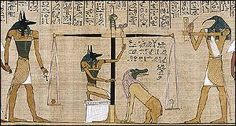

|
Book of the Dead

Detail from the Book of the Dead
The Book of the Dead is a group of about 200 spells to protect the deceased in their journey through the underworld. Many of these spells were based on spells from the pyramid texts and the coffin texts. The Book of the Dead was written on papyrus scrolls and placed in the coffin with the mummy, or in a small hollow statue.
Close
|